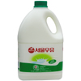

[5일 전에 구입한 서울우유 2.3ℓ. 유통기한 2006.09.12 22:16]
식료품을 구입할 때 공산품은 '유통기한'을 통해 상품의 신선도를 판별한다.
혹시 이런 말을 하거나 들어본 적이 있는가?
'이거 유통기한이 내일까지네. 내일까지 다 먹을 수 있을까?'
오해다.
여기서는 흔히 잘 못 알고 있는 '유통기한' 에 대한 상식을 되짚어보자.
먼저 '유통기한' 과 '소비기한' 에 대해 알아보자.
* '유통기한' 이란?
유통기한은 말 그대로 '소비자에게 도달하는데 까지의 제한 시간' 이다.
유통기한이 2006.09.12 라고 적혀진 제품은 '2006년 9월 12일 까지만 매장에서 판매할것' 이라는 뜻이다.
물론 유통과정에서는 반드시 상품별로 정해진 유통방법을 따라야 한다. (냉장, 냉동, 상온 유통 등)
우리나라에서는 상품에 '유통기한'을 명시하도록 규정하고 있다. (우유의 유통기한은 보통 7일로 명시된다)
* '소비기한' 이란?
상품의 품질을 보장하는 기한이 바로 '소비기한' 이다. (영어로는 Expiry Date 인걸 보니 '폐기기한' 이라고 하는게 옳을지도 모르겠다)
'소비기한' 은 유통기한처럼 날짜로 명시하기 어려운 경우가 있다. 소비자에게 전달되서 저장 및 보관 방법이 달라지는 (간단히 말해 포장을 뜯는) 순간부터의 기간을 나타내기 때문이다.
예를 들어. 소시지의 유통기한이 '제조일로부터 90일' 이라면 소시지의 소비기한은 '개봉일로부터 7일' 이라는 식이다.
모든 제품이 '개봉일로부터 x일'로 소비기한을 정하는 것은 아니다. 개봉이 제품 보관에 영향을 미치지 않거나 유통기한과 소비기한이 매우 짧은 경우(우유나 즉석식품류)는 제조일로부터 소비기한을 명시하기도 한다.
해외에는 상품에 '소비기한' 을 표시하는 경우를 곧잘 볼 수 있는데 이 경우는 일반적인 소비 패턴을 감안하여 유통기한에 적당한 날짜를 더해 계산한 경우라고 볼 수 있다. (우유의 소비기한은 보통 14일로 명시된다)
--
우리가 혼동하는 개념이 바로 이 '유통기한' 과 '소비기한' 이다.
그리고 그 실수는 '유통기한' 을 '소비기한' 으로 인식하는 것에서 비롯된다.
이로 인해 발생할 수 있는 실수의 예는 아래와 같은 것이 있다.
* 유통기한이 얼마 남지 않아 해당 상품을 구매하지 않거나 찝찝한 마음으로 구매했다.
* 위에서 찝찝한 마음으로 구매했던 상품을 냉장고에 넣어두고 깜빡잊었다가 유통기한이 하루 지난 후에 발견해서 눈물을 머금고 휴지통에 버렸다.
* 냉장고 안의 우유를 마시고 보니 유통기한이 2일이나 지난 것을 발견하고 즉시 토해낸 후 병원에 갔다.
* 찬장에서 유통기한이 일주일 남은 통조림을 대량 발견하여 일주일 내내 통조림만 먹었다.
모두 있을법한(?) 일이지만 실수다.
물론 하루라도 빨리 구매하고 소비한다면 더 높은 품질을 기대할 수 있는 것은 사실이다.
하지만 유통기한이 지난 것 만으로 품질에 이상이 생겼을 것이라고 걱정한다면 이것은 분명한 실수다.
유통기한에 대한 오해로 버려지는 음식물과 그 처리비용이 매년 수백억에 이른다고 한다.
유통기한과 소비기한을 동시에 표기하는 정책적인 변화도 필요하겠지만 소비자들이 바르게 알고만 있어도 이런 불필요한 지출은 줄일 수 있지 않을까.
그래서 난 오늘도 유통기한이 지난 우유를 마신다. 하하.. 좀 작은걸로 살껄..
- 더 중요한건 필요한 때 필요한 만큼만 적당히 구매하는 소비 습관 같습니다 -